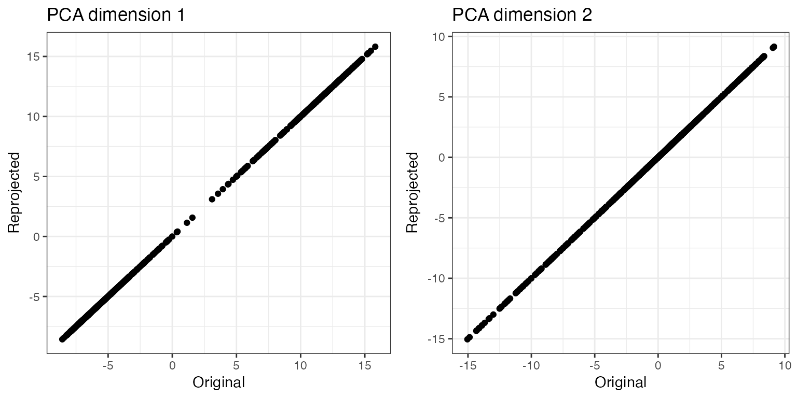
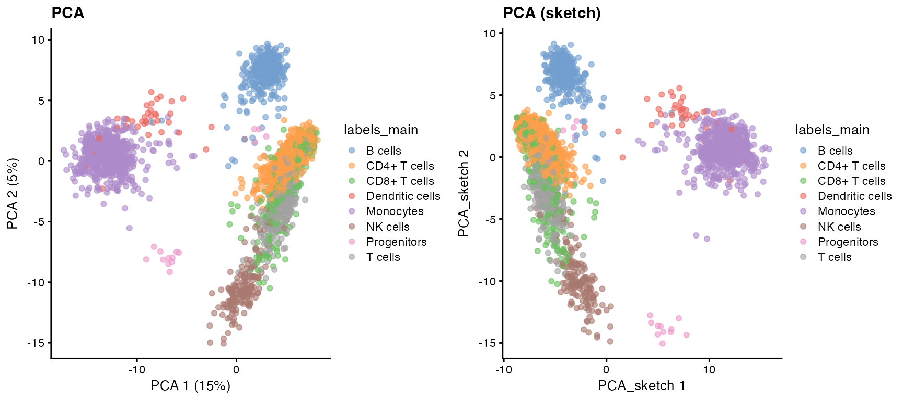
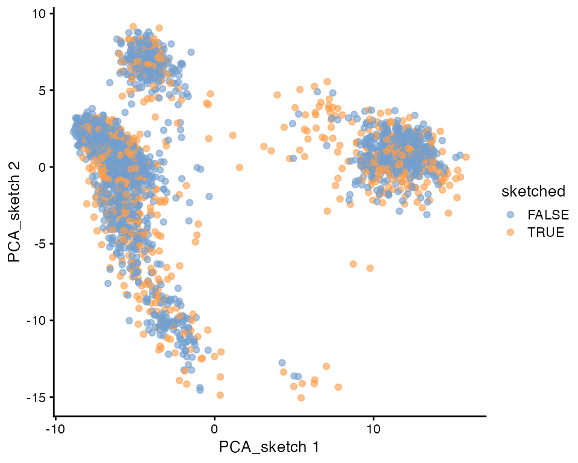
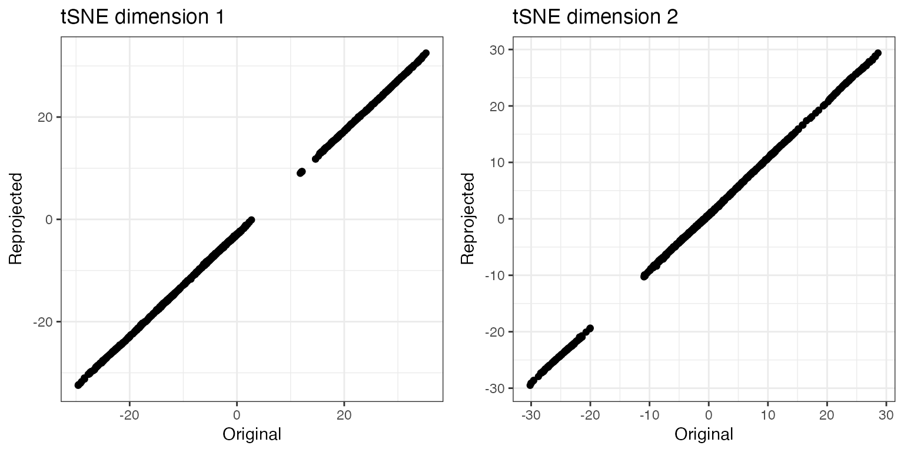
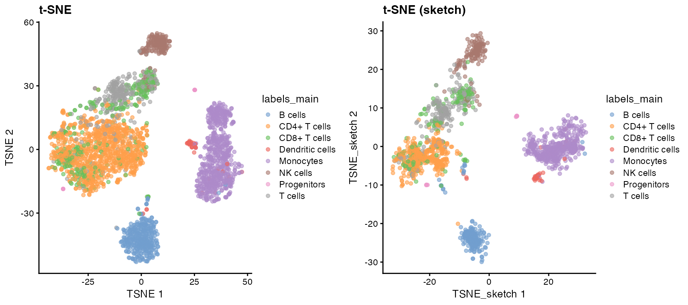
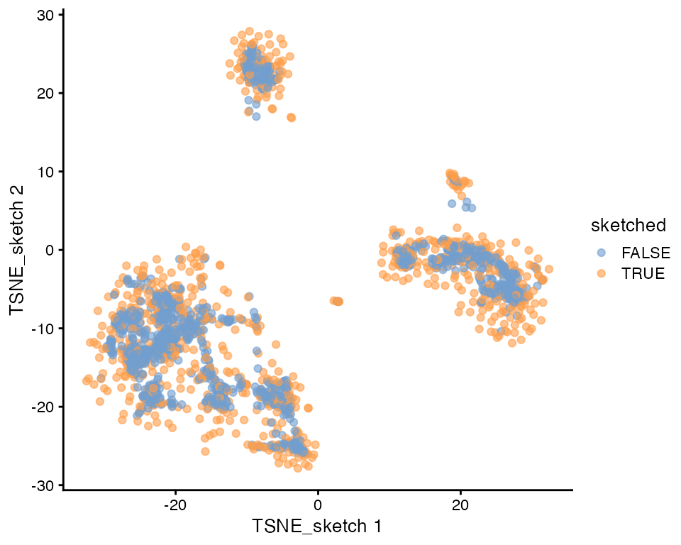
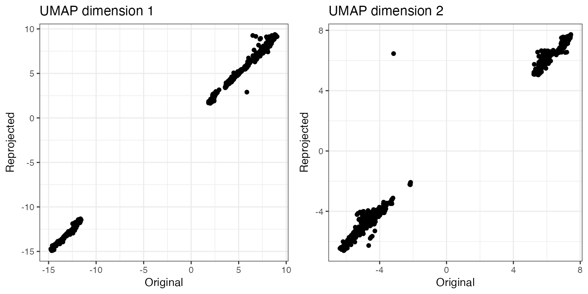
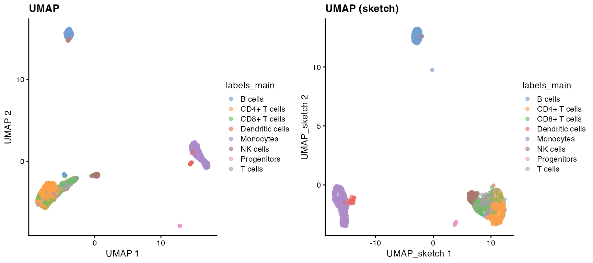
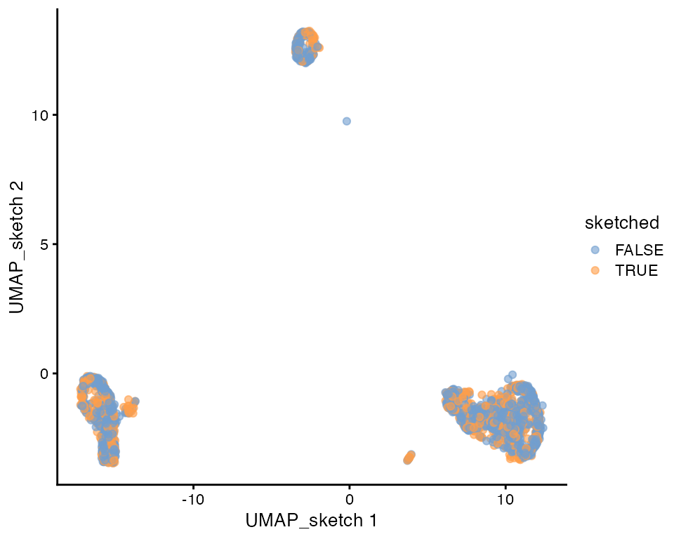

vignettes/sketching_workflows.Rmd
sketching_workflows.RmdIn this vignette, we outline how geometric sketching can be incorporated into the steps of a typical single-cell analysis workflow.
We start by loading the required packages and preparing an example data set.
suppressPackageStartupMessages({
library(sketchR)
library(TENxPBMCData)
library(scuttle)
library(scran)
library(scater)
library(SingleR)
library(celldex)
library(cowplot)
library(SummarizedExperiment)
library(SingleCellExperiment)
library(beachmat.hdf5)
library(snifter)
library(uwot)
library(bluster)
library(class)
})We will use the PBMC3k data set from the TENxPBMCData Bioconductor package for illustration. The chunk below prepares the data set by calculating log-transformed normalized counts, finding highly variable genes, applying principal component analysis, t-SNE and UMAP, and predicting cell types based on a reference data set.
# load data
pbmc3k <- TENxPBMCData(dataset = "pbmc3k")
#> see ?TENxPBMCData and browseVignettes('TENxPBMCData') for documentation
#> loading from cache
# set row and column names
colnames(pbmc3k) <- paste0("Cell", seq_len(ncol(pbmc3k)))
rownames(pbmc3k) <- uniquifyFeatureNames(
ID = rowData(pbmc3k)$ENSEMBL_ID,
names = rowData(pbmc3k)$Symbol_TENx
)
# normalize and log-transform counts
pbmc3k <- logNormCounts(pbmc3k)
# find highly variable genes
dec <- modelGeneVar(pbmc3k)
top_hvgs <- getTopHVGs(dec, n = 2000)
# perform dimensionality reduction
set.seed(100)
pbmc3k <- runPCA(pbmc3k, subset_row = top_hvgs)
reducedDim(pbmc3k, "TSNE") <- fitsne(
reducedDim(pbmc3k, "PCA"),
n_jobs = 2L, random_state = 123L,
perplexity = 30, n_components = 2L,
pca = FALSE)
reducedDim(pbmc3k, "UMAP") <- umap(
X = reducedDim(pbmc3k, "PCA"),
n_components = 2, n_neighbors = 50,
pca = NULL, scale = FALSE,
ret_model = TRUE, n_threads = 2L)$embedding
# predict cell type labels
ref_monaco <- MonacoImmuneData()
pred_monaco_main <- SingleR(test = pbmc3k, ref = ref_monaco,
labels = ref_monaco$label.main)
pbmc3k$labels_main <- pred_monaco_main$labelsNext, we extract a subset of the cells using geometric sketching. We
store information about which cells were sketched in the
colData of pbmc3k.
idx800gs <- geosketch(reducedDim(pbmc3k, "PCA"),
N = 800, seed = 123)
pbmc3k$sketched <- seq_len(ncol(pbmc3k)) %in% idx800gs
table(pbmc3k$sketched)
#>
#> FALSE TRUE
#> 1900 800We also generate a new set of highly variable genes, using only the sketched cells. This allows cells of different types to contribute more equally to the set of highly variable genes.
## Find highly variable genes
dec_sketched <- modelGeneVar(pbmc3k[, pbmc3k$sketched])
top_hvgs_sketched <- getTopHVGs(dec_sketched, n = 2000)In this section, we will illustrate how to apply PCA to the sketched cells, followed by projection of all cells onto the obtained principal components. In this way, all cells are retained for further analysis, but only the sketched ones are used to determine the principal components.
set.seed(123)
# don't scale features before PCA
doscale <- FALSE
# subset to sketched cells and run PCA, using the HVGs from the sketched subset
pbmc3k_sketched <- pbmc3k[, pbmc3k$sketched]
pca <- calculatePCA(pbmc3k_sketched, ncomponents = 30,
subset_row = top_hvgs_sketched,
scale = doscale)
# store the PCA projection for the sketched cells as well as the weights for
# the HVGs and the mean value for each HVG across the sketched cells
projection <- pca
rotation <- attr(pca, "rotation")
centers <- rowMeans(assay(pbmc3k_sketched[top_hvgs_sketched, ],
"logcounts"))
# center the full data set using the mean values from the sketched subset and
# project all cells onto the extracted principal components
# note that if doscale = TRUE, we also need to calculate the standard
# deviations across the sketched cells and use them here
pca <- scale(t(assay(pbmc3k[names(centers), ], "logcounts")), center = centers,
scale = doscale) %*% rotation
# add the PCA coordinates to pbmc3k
stopifnot(all(rownames(pca) == colnames(pbmc3k)))
reducedDim(pbmc3k, "PCA_sketch") <- as.matrix(pca)
# check that the "re-projections" of the sketched cells are the same as the
# original coordinates obtained from applying PCA to the sketched cells
# ... via correlations
vapply(seq_len(ncol(projection)), function(i) {
cor(projection[, i],
reducedDim(pbmc3k, "PCA_sketch")[rownames(projection), i]
)
}, NA_real_)
#> [1] 1 1 1 1 1 1 1 1 1 1 1 1 1 1 1 1 1 1 1 1 1 1 1 1 1 1 1 1 1 1
# ... via plotting
plot_grid(plotlist = lapply(seq_len(ncol(projection))[1:2], function(i) {
ggplot(data.frame(
Original = projection[, i],
Reprojected = reducedDim(pbmc3k, "PCA_sketch")[pbmc3k$sketched, i]),
aes(x = Original, y = Reprojected)) +
geom_point() +
labs(title = paste0("PCA dimension ", i)) +
theme_bw()
}))
For comparison, we plot the first two principal components obtained with and without sketching.
plot_grid(plotlist = list(
plotReducedDim(pbmc3k, dimred = "PCA", colour_by = "labels_main",
ncomponents = c(1, 2)) +
ggtitle("PCA"),
plotReducedDim(pbmc3k, dimred = "PCA_sketch", colour_by = "labels_main",
ncomponents = c(1, 2)) +
ggtitle("PCA (sketch)")
))
We also visualize the location of the sketched cells in the PCA, noting that as expected, the sampling fraction is higher in regions of lower density.
plotReducedDim(pbmc3k, dimred = "PCA_sketch", colour_by = "sketched",
ncomponents = c(1, 2))
Next, we illustrate how to pull the full data set into a tSNE
representation derived from the sketched cells. This workflow is also
described in the snifter
vignette. Note that, unlike for PCA, for tSNE the projected coordinates
of the sketched cells themselves may not be identical to their original
coordinates in the tSNE representation, as the initial placement of a
point in the embedding is obtained by averaging the coordinates of its
k nearest neighbors. Unless k=1, this initial
placement will therefore be influenced by other sketched cells as well.
If we want to make sure that the low-dimensional coordinates of the
sketched cells are exactly those obtained by the original tSNE
embedding, this can be achieved by only projecting the non-sketched
cells, and concatenating these projections with the original embeddings
of the sketched cells.
set.seed(123)
# extract tSNE embedding from sketched cells
tsne <- fitsne(
reducedDim(pbmc3k[, pbmc3k$sketched], "PCA_sketch"),
n_jobs = 2L, random_state = 123L,
perplexity = 30, n_components = 2L,
pca = FALSE)
# project all cells
proj <- project(
x = tsne,
new = reducedDim(pbmc3k, "PCA_sketch"),
old = reducedDim(pbmc3k[, pbmc3k$sketched], "PCA_sketch"),
perplexity = 30, k = 1L)
rownames(proj) <- colnames(pbmc3k)
reducedDim(pbmc3k, "TSNE_sketch") <- proj
# representations of sketched cells are approximately retained
# ... correlations
vapply(seq_len(ncol(tsne)), function(i) {
cor(tsne[, i],
reducedDim(pbmc3k, "TSNE_sketch")[pbmc3k$sketched, i]
)
}, NA_real_)
#> [1] 0.9999848 0.9999710
# ... plotting
plot_grid(plotlist = lapply(seq_len(ncol(tsne)), function(i) {
ggplot(data.frame(
Original = tsne[, i],
Reprojected = reducedDim(pbmc3k, "TSNE_sketch")[pbmc3k$sketched, i]),
aes(x = Original, y = Reprojected)) +
geom_point() +
labs(title = paste0("tSNE dimension ", i)) +
theme_bw()
}))
As for the PCA, we plot the t-SNE representations obtained with and without sketching.
plot_grid(plotlist = list(
plotReducedDim(pbmc3k, dimred = "TSNE", colour_by = "labels_main",
ncomponents = c(1, 2)) +
ggtitle("t-SNE"),
plotReducedDim(pbmc3k, dimred = "TSNE_sketch", colour_by = "labels_main",
ncomponents = c(1, 2)) +
ggtitle("t-SNE (sketch)")
))
We also visualize the location of the sketched cells in the t-SNE.
plotReducedDim(pbmc3k, dimred = "TSNE_sketch", colour_by = "sketched",
ncomponents = c(1, 2))
Similarly to t-SNE, we can also project new data into an existing UMAP embedding, using the uwot package.
set.seed(123)
# extract UMAP embedding from sketched cells
umap <- umap(
X = reducedDim(pbmc3k[, pbmc3k$sketched], "PCA_sketch"),
n_components = 2, n_neighbors = 50,
pca = NULL, scale = FALSE,
ret_model = TRUE, n_threads = 2L)
# project all cells
proj <- umap_transform(
X = reducedDim(pbmc3k, "PCA_sketch"),
model = umap,
n_threads = 2L)
rownames(proj) <- colnames(pbmc3k)
reducedDim(pbmc3k, "UMAP_sketch") <- proj
# representations of sketched cells are approximately retained
# ... correlations
vapply(seq_len(ncol(umap$embedding)), function(i) {
cor(umap$embedding[, i],
reducedDim(pbmc3k, "UMAP_sketch")[pbmc3k$sketched, i]
)
}, NA_real_)
#> [1] 0.9983324 0.9868369
# ... plotting
plot_grid(plotlist = lapply(seq_len(ncol(umap$embedding)), function(i) {
ggplot(data.frame(
Original = umap$embedding[, i],
Reprojected = reducedDim(pbmc3k, "UMAP_sketch")[pbmc3k$sketched, i]),
aes(x = Original, y = Reprojected)) +
geom_point() +
labs(title = paste0("UMAP dimension ", i)) +
theme_bw()
}))
As before, we plot the UMAP representations obtained with and without sketching.
plot_grid(plotlist = list(
plotReducedDim(pbmc3k, dimred = "UMAP", colour_by = "labels_main",
ncomponents = c(1, 2)) +
ggtitle("UMAP"),
plotReducedDim(pbmc3k, dimred = "UMAP_sketch", colour_by = "labels_main",
ncomponents = c(1, 2)) +
ggtitle("UMAP (sketch)")
))
We also visualize the location of the sketched cells in the UMAP.
plotReducedDim(pbmc3k, dimred = "UMAP_sketch", colour_by = "sketched",
ncomponents = c(1, 2))
Also clustering can be beneficial to apply only to the sketched
cells, followed by prediction of cell type labels using, e.g., k-nearest
neighbors. Following a similar reasoning as for tSNE above, unless we
use k=1 in the k-nearest neighbor prediction, the predicted
cluster labels of the sketched cells may not be the same as the ones
obtained directly from the clustering. Here we cluster the sketched
cells using functions from the bluster
package.
# subset to only the sketched cells
# note that since the PCA_sketch embedding was obtained by applying PCA to the
# sketched cells only, subsetting like this is equivalent to applying PCA
# again to the sketched cells only (see above for an illustration)
pca_sketch <- reducedDim(pbmc3k[, pbmc3k$sketched], "PCA_sketch")
set.seed(123)
# run clustering on the sketched cells
clst <- as.character(clusterRows(
pca_sketch,
BLUSPARAM = SNNGraphParam(
k = 10, type = "rank",
num.threads = 2L,
cluster.fun = "leiden",
cluster.args = list(resolution = 0.15))))
# predict labels of all cells using 1-nearest neighbors and add cluster labels
# to pbmc3k
preds <- knn(train = pca_sketch,
test = reducedDim(pbmc3k, "PCA_sketch"),
cl = clst, k = 1) |> as.character()
pbmc3k$clusters <- preds
# check that labels are retained for sketched cells
all(clst == pbmc3k$clusters[pbmc3k$sketched])
#> [1] TRUE
sessionInfo()
#> R version 4.5.1 (2025-06-13)
#> Platform: aarch64-apple-darwin20
#> Running under: macOS Sonoma 14.7.6
#>
#> Matrix products: default
#> BLAS: /Library/Frameworks/R.framework/Versions/4.5-arm64/Resources/lib/libRblas.0.dylib
#> LAPACK: /Library/Frameworks/R.framework/Versions/4.5-arm64/Resources/lib/libRlapack.dylib; LAPACK version 3.12.1
#>
#> locale:
#> [1] en_US.UTF-8/en_US.UTF-8/en_US.UTF-8/C/en_US.UTF-8/en_US.UTF-8
#>
#> time zone: UTC
#> tzcode source: internal
#>
#> attached base packages:
#> [1] stats4 stats graphics grDevices utils datasets methods
#> [8] base
#>
#> other attached packages:
#> [1] class_7.3-23 bluster_1.19.0
#> [3] uwot_0.2.3 snifter_1.19.3
#> [5] beachmat.hdf5_1.7.1 cowplot_1.2.0
#> [7] celldex_1.19.0 SingleR_2.11.3
#> [9] scater_1.37.0 ggplot2_3.5.2
#> [11] scran_1.37.0 scuttle_1.19.0
#> [13] TENxPBMCData_1.27.0 HDF5Array_1.37.0
#> [15] h5mread_1.1.1 rhdf5_2.53.4
#> [17] DelayedArray_0.35.2 SparseArray_1.9.1
#> [19] S4Arrays_1.9.1 abind_1.4-8
#> [21] Matrix_1.7-3 SingleCellExperiment_1.31.1
#> [23] SummarizedExperiment_1.39.1 Biobase_2.69.0
#> [25] GenomicRanges_1.61.1 Seqinfo_0.99.2
#> [27] IRanges_2.43.0 S4Vectors_0.47.0
#> [29] BiocGenerics_0.55.1 generics_0.1.4
#> [31] MatrixGenerics_1.21.0 matrixStats_1.5.0
#> [33] sketchR_1.5.1 BiocStyle_2.37.1
#>
#> loaded via a namespace (and not attached):
#> [1] RColorBrewer_1.1-3 jsonlite_2.0.0
#> [3] magrittr_2.0.3 ggbeeswarm_0.7.2
#> [5] gypsum_1.5.0 farver_2.1.2
#> [7] rmarkdown_2.29 fs_1.6.6
#> [9] ragg_1.4.0 vctrs_0.6.5
#> [11] memoise_2.0.1 DelayedMatrixStats_1.31.0
#> [13] htmltools_0.5.8.1 AnnotationHub_3.99.6
#> [15] curl_6.4.0 BiocNeighbors_2.3.1
#> [17] Rhdf5lib_1.31.0 sass_0.4.10
#> [19] alabaster.base_1.9.5 bslib_0.9.0
#> [21] basilisk_1.21.5 desc_1.4.3
#> [23] httr2_1.2.1 cachem_1.1.0
#> [25] igraph_2.1.4 lifecycle_1.0.4
#> [27] pkgconfig_2.0.3 rsvd_1.0.5
#> [29] R6_2.6.1 fastmap_1.2.0
#> [31] digest_0.6.37 AnnotationDbi_1.71.1
#> [33] dqrng_0.4.1 irlba_2.3.5.1
#> [35] ExperimentHub_2.99.5 textshaping_1.0.1
#> [37] RSQLite_2.4.2 beachmat_2.25.4
#> [39] labeling_0.4.3 filelock_1.0.3
#> [41] httr_1.4.7 compiler_4.5.1
#> [43] bit64_4.6.0-1 withr_3.0.2
#> [45] BiocParallel_1.43.4 viridis_0.6.5
#> [47] DBI_1.2.3 alabaster.ranges_1.9.1
#> [49] alabaster.schemas_1.9.0 rappdirs_0.3.3
#> [51] tools_4.5.1 vipor_0.4.7
#> [53] beeswarm_0.4.0 glue_1.8.0
#> [55] rhdf5filters_1.21.0 grid_4.5.1
#> [57] cluster_2.1.8.1 gtable_0.3.6
#> [59] BiocSingular_1.25.0 ScaledMatrix_1.17.0
#> [61] metapod_1.17.0 XVector_0.49.0
#> [63] RcppAnnoy_0.0.22 ggrepel_0.9.6
#> [65] BiocVersion_3.22.0 pillar_1.11.0
#> [67] limma_3.65.3 dplyr_1.1.4
#> [69] BiocFileCache_2.99.5 lattice_0.22-7
#> [71] bit_4.6.0 tidyselect_1.2.1
#> [73] locfit_1.5-9.12 Biostrings_2.77.2
#> [75] knitr_1.50 gridExtra_2.3
#> [77] edgeR_4.7.3 xfun_0.52
#> [79] statmod_1.5.0 yaml_2.3.10
#> [81] evaluate_1.0.4 codetools_0.2-20
#> [83] tibble_3.3.0 alabaster.matrix_1.9.0
#> [85] BiocManager_1.30.26 cli_3.6.5
#> [87] reticulate_1.43.0 systemfonts_1.2.3
#> [89] jquerylib_0.1.4 Rcpp_1.1.0
#> [91] dir.expiry_1.17.0 dbplyr_2.5.0
#> [93] png_0.1-8 parallel_4.5.1
#> [95] assertthat_0.2.1 pkgdown_2.1.3.9000
#> [97] blob_1.2.4 sparseMatrixStats_1.21.0
#> [99] alabaster.se_1.9.0 viridisLite_0.4.2
#> [101] scales_1.4.0 purrr_1.1.0
#> [103] crayon_1.5.3 rlang_1.1.6
#> [105] KEGGREST_1.49.1